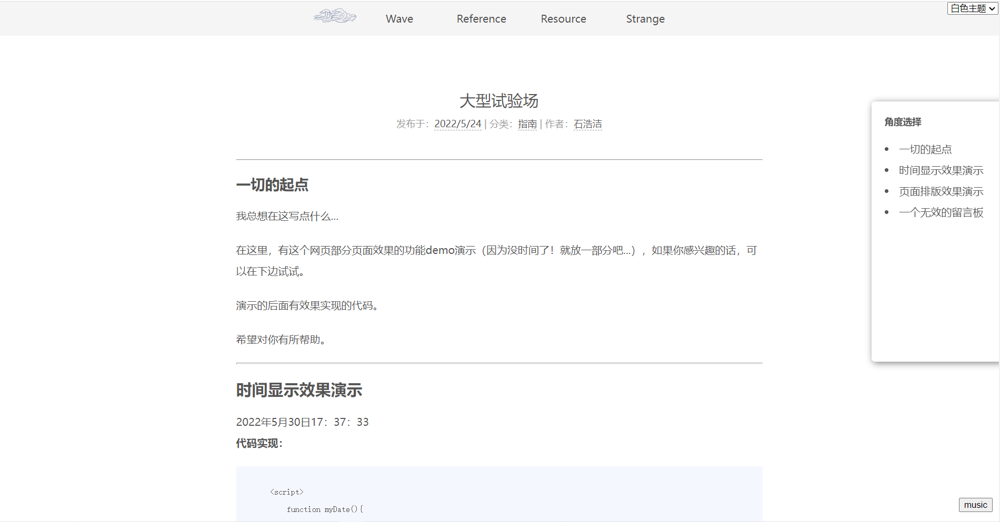
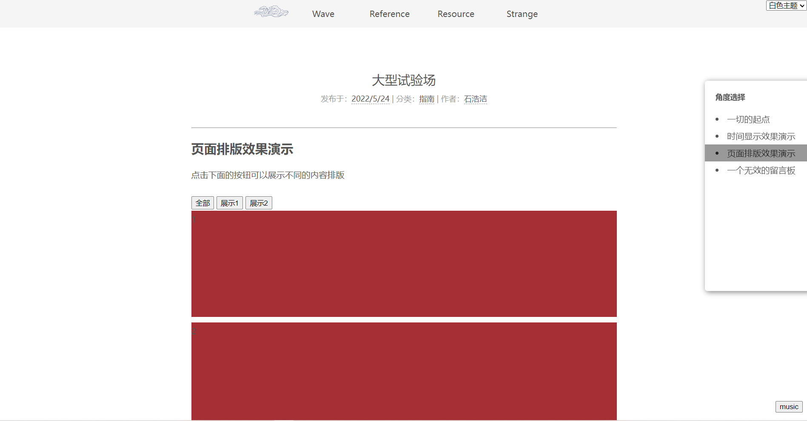

前言
这是一个相当简陋的博客，没有优秀的交互，没有规范的框架，是一个纯粹手动打造出来的网页。
我的博客做得比较简单，功能不算很多，由于很多知识点都还没有学习过，因此很多交互功能我都没有实现，只能做出这样的一个静态网页，实在惭愧。
所以我正重新学习web的相关课程，希望能真正获得有用的知识吧。
在学习过程中，我遇到了很多的坑，而且因为互联网的资料繁杂多样而难以查找到真正有用的东西。因此，我把做这个网站的所有经验都放在这个博客里了，在该博客里，你（目前）可以学到：一周速通web选修课
为了能使学习过程不那么困难，我将大多数学习技巧、知识点、课程所需功能的制作方法等都列举了出来，并加以详细的描述，希望对你有用。
如何食用该博客？
html确实很有意思，如果未来这个网站能够做到以有史以来最方便的方法来查找资料的话，也许这个idea就能够实现它的最大价值了。为此，我用该博客做了这个测试。
该博客最有意思的功能是博客页面右侧隐藏的视角切换功能。
把鼠标移动到右侧，会出现一个视角选择窗口，如图所示。
角度1
角度2
对于一篇文章来说，不同的人会注意到文章不同的点。例如一个好奇的人只是想看看这个文章有什么新奇的地方，并不想了解到过于深奥的内容，而对于一个相关专业的同学来说，所需要的东西就是文章中有着真材实料的东西。
这个导航栏有着不同的分类，点击之后可以以不同的视角浏览文章，舍去无关内容，同时左侧隐藏大纲也会同步刷新页面内容的大纲。该功能可以最大程度地让不同用户快速搜索到自己需要的资料，减少浪费时间。
请自由探索本博客吧~
本网站已实现的额外功能
左侧隐藏大纲功能
右侧视角切换功能
右下角页面音乐播放功能（目前仅主页有效，其他页面下无法播放，不知道是在修改什么的过程中出现的bug，至今仍未修复...）
点击图片放大
如何制作自己喜欢的网站？
一切的起点
我总想在这写点什么...
如何从其他网站页面中学会制作网站？
如今想要调试一个网站，基本都能直接在浏览器中按下F12进入开发者模式即可查看其源代码并更改查看页面布局的变化情况。
此外，也能够通过 Ctrl + Shift + C 来选择想要查看的元素进行源代码定位，这样就能快速的了解到你需要的相关元素的代码实现办法了。
在浏览页面的过程中，发现一些好的布局或者有意思的功能，通过这种操作进行参考学习绝对是快速成长的好办法。
如果说一位程序员还不会从其他程序员的代码中获得灵感，或是不会借鉴其他代码的优秀之处，那么这位程序员绝对是不合格的程序员。
查看全文试验场的起点
我总想在这写点什么...
我在学习各种知识的时候，总是被搜索到的知识与知识之间的不连贯与案例的不直观等问题白白浪费很多的时间。即便互联网非常发达，即便搜索引擎相等之多，想要找到自己需要的东西仍然很难。
为了解决这个问题，我打算在此开始实验性地开创一些课程的指南，让大家在学习一些课程的时候能够节省查找资料的时间，很好地学习到一些有用的案例。
很明显，现在的准备还不够充分，但是我会在以后不断地完善该网站，让大家能够自己制作一些教程以方便大家的学习。
在这里，有这个网页部分页面效果的功能demo演示（因为没时间了！就放一部分吧...），如果你感兴趣的话，可以在下边试试。
演示的后面有效果实现的代码。
希望对你有所帮助。
查看全文到底了哦~